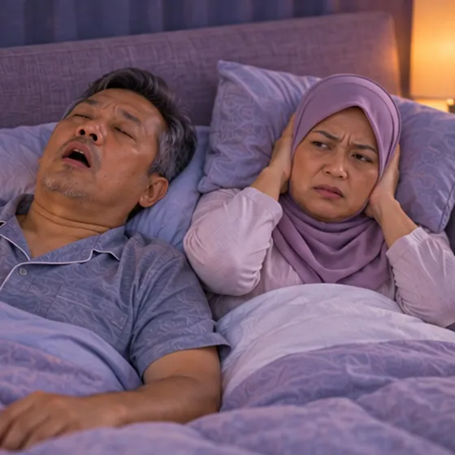
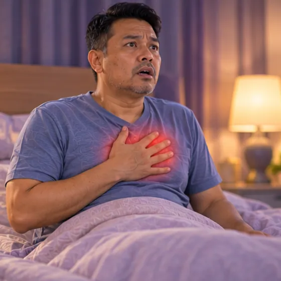

Apnea tidur
Pernafasan yang berulang kali terhenti semasa tidur kerana saluran udara menyempit
Apa itu
Dalam apnea tidur, saluran udara menyempit atau tertutup berkali-kali semasa tidur, jadi pernafasan terhenti seketika. Tidur terganggu, dan seseorang mungkin berasa sangat penat pada siang hari.
- Tekak dan saluran udara
- Dewasa, selalunya yang berat badan berlebihan
- Berdengkur kuat, penat pada siang hari
- Jumpa doktor
- Doktor keluarga, doktor tidur atau pakar telinga hidung tekak
- Biasa pada
- Orang dewasa, terutamanya yang berat badan berlebihan, dan warga emas
- Berjangkit
- Tidak
- Perjalanan
- Biasanya jangka panjang, tetapi doktor boleh membantu anda menguruskannya
Tanda biasa

Berdengkur, mengantuk siang hariGangguan pernafasan tidur 
Mengantuk pada siang hariMengantuk berlebihan siang hari 
Terjaga sesak nafasDispnea waktu malam Kabur fikiran, sukar fokusKurang tumpuan Mudah marahMudah marah
Mengapa ia berlaku

Berat badan berlebihanBerat badan berlebihan
Punca lain
- Otot tekak mengendur semasa tidur dan saluran udara menyempit
- Saluran udara sempit, tonsil besar atau hidung tersumbat
- Alkohol sebelum tidur, merokok, dan usia yang meningkat
Jumpa doktor dahulu jika
- Sakit dada atau tiba-tiba sukar bernafas: hubungi 999
- Tertidur semasa memandu: jangan memandu dan jumpa doktor segera
- Pernafasan terhenti yang dilihat orang lain, dengan tercekik atau tercungap
- Sakit kepala pagi, tekanan darah tinggi, atau degupan jantung tidak sekata
- Keletihan yang teruk pada siang hari yang menjejaskan kerja atau keselamatan
Jika mana-mana berkenaan, sila jumpa doktor sebelum sesi.
Halaman ini ialah maklumat am. Sila terus mengambil ubat biasa anda dan terus berjumpa doktor.
Teruskan mengambil ubat biasa anda dan terus berjumpa doktor. Sesi kami ialah sokongan lembut dan tidak menggantikan rawatan perubatan.
Menjaga diri

Kekalkan berat badan sihatPengurusan berat badan 
Kurangkan alkoholPengurangan alkohol
Lebih banyak cara menjaga diri
- Cuba tidur mengiring dan bukannya menelentang
- Tanya doktor tentang pemeriksaan tidur; jangan guna pil tidur tanpa nasihat
Beritahu ahli terapi anda
- Tekanan darah tinggi
- Penyakit jantung
- Perentak jantung atau implan logam
Ahli terapi anda akan menyemaknya bersama anda sebelum bermula.
Soalan dan jawapan
Apakah Apnea tidur?
Pernafasan yang berulang kali terhenti semasa tidur kerana saluran udara menyempit. Dalam apnea tidur, saluran udara menyempit atau tertutup berkali-kali semasa tidur, jadi pernafasan terhenti seketika. Tidur terganggu, dan seseorang mungkin berasa sangat penat pada siang hari.
Apakah tanda biasa Apnea tidur?
Berdengkur, mengantuk siang hari · Mengantuk pada siang hari · Terjaga sesak nafas · Kabur fikiran, sukar fokus · Mudah marah
Mengapa Apnea tidur berlaku?
Berat badan berlebihan
Bagaimana menjaga diri dengan Apnea tidur?
Kekalkan berat badan sihat · Kurangkan alkohol
Bolehkah sesi AI Body Master membantu Apnea tidur?
Sesi ialah sokongan meridian tanpa jarum yang lembut untuk kesejahteraan anda. Ia tidak merawat atau menyembuhkan Apnea tidur dan tidak menggantikan ubat atau doktor anda. Beritahu ahli terapi anda sebelum sesi bermula.
Keadaan berkaitan
Rujukan: General information based on public health sources such as Mayo Clinic, NHS, Cleveland Clinic and NCBI StatPearls.
Halaman dikemas kini: 2026-11-01